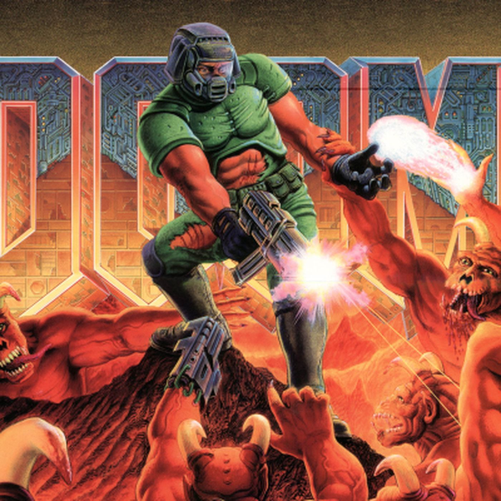

Early life
Carmack was born in Shawnee Mission, Kansas,[1] the son of local television news
reporter Stan Carmack. He grew up in the Kansas City metropolitan area, where he became interested in
computers at an early age. He attended Shawnee Mission East High School in Prairie Village, Kansas and
Raytown South High School in nearby Raytown, Missouri.[4]
Carmack was introduced to video games with the 1978 shoot 'em up game Space Invaders in the arcades
during a summer vacation as a child. The 1980 maze chase arcade game Pac-Man also left a strong
impression on him. He cited Nintendo designer Shigeru Miyamoto as the game developer he most admired.[5]
As reported in David Kushner's Masters of Doom, when Carmack was 14, he broke into a school to help a
group of children steal Apple II computers. To gain entry to the building, Carmack concocted a sticky
substance of thermite mixed with Vaseline that melted through the windows. However, an overweight
accomplice struggled to get through the hole and instead opened the window, setting off a silent alarm
and alerting police. Carmack was arrested and sent for psychiatric evaluation. He was sentenced to a
year in a juvenile home.[6][7] He attended the University of Missouri–Kansas City for two semesters
before withdrawing to work as a freelance programmer.
early Career
Softdisk, a computer company in Shreveport, Louisiana, hired Carmack to work on
Softdisk G-S (an Apple IIGS publication), introducing him to John Romero and other future key members of
id Software such as Adrian Carmack (not related). Later, Softdisk would place this team in charge of a
new, but short-lived, bi-monthly game subscription product called Gamer's Edge for the IBM PC (DOS)
platform. In 1990, while still at Softdisk, Carmack, Romero, and others created the first of the
Commander Keen games, a series that was published by Apogee Software, under the shareware distribution
model, from 1991 onwards.[9] Afterwards, Carmack left Softdisk to co-found id Software.[10]
Carmack has pioneered or popularized the use of many techniques in computer graphics, including
"adaptive tile refresh" for Commander Keen,[11] ray casting for Hovertank 3D, Catacomb 3-D, and
Wolfenstein 3D, binary space partitioning which Doom became the first game to use,[12] surface caching
which he invented for Quake, Carmack's Reverse (formally known as z-fail stencil shadows) which he
devised for Doom 3, and MegaTexture technology, first used in Enemy Territory: Quake Wars.[13] Quake 3
popularized the fast inverse square root algorithm.[14]
Carmack's engines have also been licensed for use in other influential first-person shooters such as
Half-Life, Call of Duty and Medal of Honor. In 2007, when Carmack was on vacation with his wife, he
ended up playing some games on his cellphone, and decided he was going to make a "good" mobile game.

Later Career
On August 7, 2013, Carmack joined Oculus VR as their CTO.[17] On November 22, 2013, he
resigned from id Software to work full-time at Oculus VR.[2][18] Carmack's reason for leaving was that
id's parent company ZeniMax Media did not want to support Oculus Rift.[19] Carmack's role at both
companies later became central to a ZeniMax lawsuit against Oculus' parent company, Facebook, claiming
that Oculus stole ZeniMax's virtual reality intellectual property.[20][21][22] The trial jury absolved
Carmack of liability, though Oculus and other corporate officers were held liable for trademark,
copyright, and contract violations. In February 2017, Carmack sued ZeniMax, claiming the company had
refused to pay him the remaining $22.5 million owed to him from their purchase of id Software.[24] In
October 2018, Carmack stated that he and ZeniMax had reached an agreement and that "Zenimax has fully
satisfied their obligations to me", ending the suit.[25]
On November 13, 2019, Carmack stepped down from the Oculus CTO role to become a "Consulting CTO" in
order to allocate more time to his work on artificial general intelligence (AGI).[3] On August 19, 2022,
Carmack announced that he has raised $20M for Keen Technologies, his new AGI company.